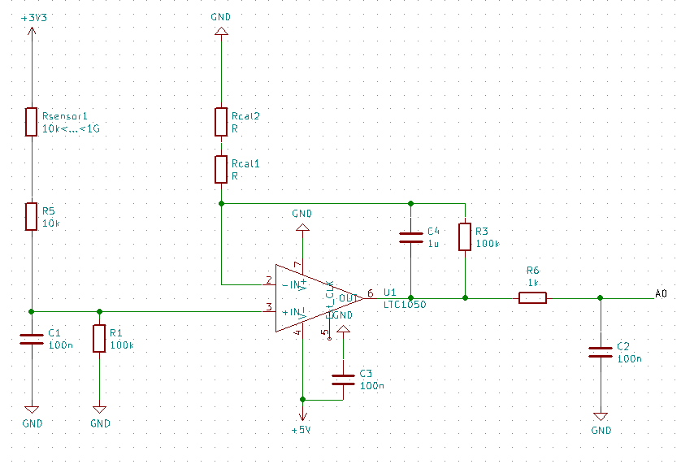
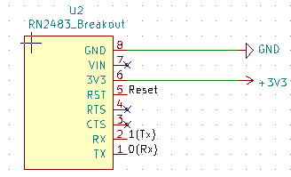
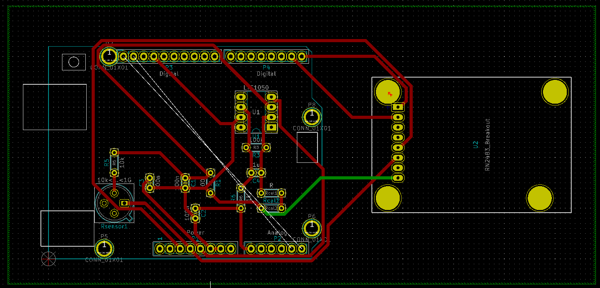

Presentation of experiences linked to the training
During this formation, I made several projects related to the IoT in pair or in a larger team. Here I present an overview of all experiences that I found relevant on this context.
| Summary table of the whole course | |||
|---|---|---|---|
| DATE | DURATION | CONTEXT | FUNCTIONS |
| 10/04/2018 to 01/22/2019 | 4 months | Innovative project: realization of a platform for the measurement of the air quality of a big city. This project is in collaboration with the University of Wollongong. |
|
| 10/01/2018 to 11/30/2018 | 2 months | Smart devices: design of an Arduino Uno board. |
|
| 11/26/2018 to 12/22/2018 | 1 month | Big Data: analysis of a dataset about the Olympic Games. |
|
| 11/08/2018 to 11/09/2018 | 2 days | Hackathon: design of a biosensor mussel. |
|
| 01/14/2019 to 01/27/2019 | 2 weeks | Service Architecture: design and implementation of a service oriented architecture for automatic management of INSA rooms. |
|
Introduction
Innovative Project
The environment and context
Nowadays, big cities have various nuisance which impact on the health and the comfort of citizen. The University of Wollongong, based in Australia, has proposed a project on designing an embedded sensor platform to be deployed by non-scientific people. This platform has to collect data about the quality of the air in a city, analyze these data and display them on a user interface as a website.
This project is the main project for the Innovative Smart System training as it combines electronic and computer science skills. For this project, our team is composed of five students: two from electronic domain and three from the computer science domain. We divided the project into two parts: an electronic part and a software part.
My function
As I am a computer science student, I was part of the computer science team. Our missions were to develop a web interface and to analyze data measured by the air quality sensor in order to interpret them and show them on the interface through graphs and a map. One member of the team has already developed a website using Angular, so we decide to use this technology to develop our website.
Smart Devices
The environment and context
The “Smart Devices” module includes diverse notions as sensors, microcontrollers and design documents of electronic cards using KiCad. The aim of the course is to have a first experience with microcontrollers and their architecture, and their use with sensors in order to collect data from these sensors and send these data on a low power wide area network as LoRa. As a student coming from computer science domain, it was my first time working on an Arduino microcontroller and designing electronical circuits.
We had to make a project in pair which consists of designing an Arduino shield in order to connect a gas sensor to an Arduino Uno. The Arduino collects data from the sensor and send them to a LoRa module which communicates them on The Things Network.
My function
To realize this project, me and my partners worked on the same tasks. Firstly, we had to make the schematic of the impedance adaptation circuit using KiCad. Some components are not present initially in KiCad, so we had to draw the symbol of a LTC1050 amplifier and a RN_Breakout2483 module regarding their datasheet. Then, we have drawn the schematic of the impedance adaptation circuit.
 Secondly, we made the layout of the PCB from the schematic by arranging components on the board and routing them.
Big Data
The environment and context
My function
Introduction
During this journey, we study on several fields related to the IoT domain. From electronical design of electronic components to data communication, but also about human concepts in team management and social psychology, we follow formation in order to understand, to design and to implement innovative products.
Smart Devices
Sensor introduction
In an IoT application, sensors are the base of the system. Different types of sensors exist to measure several phenomena. In the context of our formation, the goal of this course is to help for choosing a sensor, designing a measurement chain and to develop a "smart device". As we will certainly embed a sensor into an IoT system, it is important to take into account all these concepts to make the good choices.
What we want for a sensor is the fiability and the accuracy. A sensor measure a specific (or several) phenomena and delivers a voltage depending on the value of the measurant.